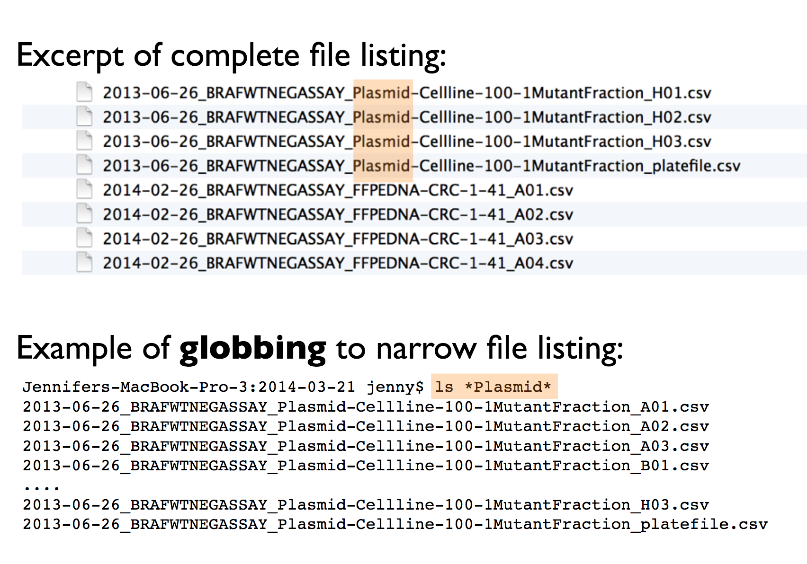
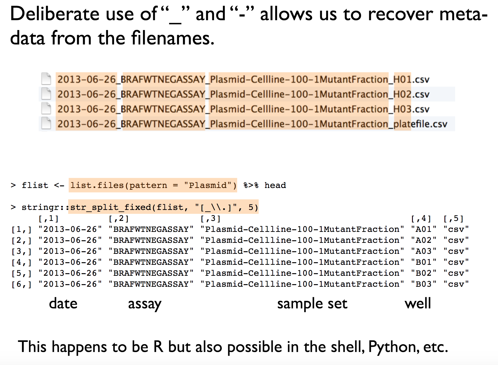

1 Project workflows
In RStudio, a project is a way to organize your work within the IDE. It’s a fundamental concept designed to enhance your workflow by providing a structured and efficient means of managing your R-related tasks and files. Here’s why R projects are useful:
1. Organized File Structure: R projects encourage you to maintain a well-organized file structure for your work. Instead of having scattered R scripts, data files, and figures, you create a dedicated folder for each project. This folder typically contains all project-related materials, including data, code, figures, notes, and any other relevant files.
2. Working Directory Management: When you open an R project in RStudio, it automatically sets the working directory to the project’s folder. This ensures that all file paths are relative to the project’s location. This working directory intentionality eliminates the need for setting working directories manually or using absolute paths in your code.
3. Portability and Collaboration: R projects make your work more portable and collaborative. Since all paths are relative to the project folder, the project can be easily shared with others. It ensures that the code works consistently across different computers and for other users, promoting collaboration and reproducibility.
4. RStudio Integration: RStudio integrates project management seamlessly. You can designate a folder as an R project, and RStudio leaves a .Rproj file in that folder to store project-specific settings. When you double-click on this file, it opens a fresh instance of RStudio with the project’s working directory and file browser pointed at the project folder.
5. Efficient Workflow: RStudio provides various menu options and keyboard shortcuts for managing projects. This includes the ability to open existing projects, switch between projects, and even launch multiple instances of RStudio for different projects.
In essence, R projects help you maintain a clean and organized workspace, improve collaboration, and ensure that your work remains reproducible and transferable across different environments and over time. It’s a best practice for data scientists and analysts working with R, as it fosters the disciplined use of relative file paths and working directories, which is crucial for the reliability and scalability of your R projects.
1.1 Setting up a new project
You should start a new R project when you begin working on a distinct task, research project, or analysis. This ensures that your work is well-organized, and it’s especially beneficial when you need to collaborate, share, or revisit the project later.
To create and open an R project in RStudio:
Go to “File” in the RStudio menu.
Select “New Project…”
Choose a project type or create a new directory for the project.
Click “Create Project.”
The new project will be created with a .Rproj file. You can open it by double-clicking on this file or by using the “File” menu in RStudio.
This will set up a dedicated workspace for your project, ensuring that the working directory and file paths are appropriately managed.
To maintain a clean and efficient workflow in R, it’s advisable to avoid using setwd() at the beginning of each script. This practice promotes the use of safe file paths and is particularly important for projects with multiple collaborators or when working across different computers.
1.1.1 Absolute vs. Relative Paths:
While absolute file paths provide an explicit way to locate resources, they have significant drawbacks, such as incompatibility and reduced reproducibility. Relative file paths, on the other hand, are relative to the current working directory, making them shorter, more portable, and more reproducible.
An Absolute file path is a path that contains the entire path to a file or directory starting from your Home directory and ending at the file or directory you wish to access e.g.
/home/your-username/project/data/penguins_raw.csvIf you share files, another user won’t have the same directory structure as you, so they will need to recreate the file paths
If you alter your directory structure, you’ll need to rewrite the paths
An absolute file path will likely be longer than a relative path, more of the backslashes will need to be edited, so there is more scope for error.
A Relative filepath is the path that is relative to the working directory location on your computer.
When you use RStudio Projects, wherever the .Rproj file is located is set to the working directory. This means that if the .Rproj file is located in your project folder then the relative path to your data is:
data/penguins_raw.csvThis filepath is shorter and it means you could share your project with someone else and the script would run without any editing.
1.1.2 Organizing Projects:
A key aspect of this workflow is organizing each logical project into a separate folder on your computer. This ensures that files and scripts are well-structured, making it easier to manage your work.
1.1.3 The here Package:
To further enhance this organization and ensure that file paths are independent of specific working directories, the here package comes into play. The here::here() function provided by this package builds file paths relative to the top-level directory of your project.
my_project.RProj/
|- data/
| |- raw/
| |- penguins_raw.csv
| |- processed/
|- scripts/
| |- analysis.R
|- results/
In the above project example you have raw data files in the data/raw directory, scripts in the scripts directory, and you want to save processed data in the data/processed directory.
To access this data using a relative filepath we need:
To access this data with here we provide the directories and desired file, and here() builds the required filepath starting at the top level of our project each time
One quirk of working in a .Rmd Rmarkdown file is that when you “knit” all code is compiled with the working directory as the folder that .Rmd file lives in, but if you are working in a script .R or in a live session then the default working directory is the top level of the project file. This frustrating and confusing process can lead to errors when attempting to compile documents.
BUT if you use the here package then this default behaviour is overridden. The working directory when knitting will be the top-level .Rproj location again!
1.2 Blank slates
When working on data analysis and coding projects in R, it’s crucial to ensure that your analysis remains clean, reproducible, and free from hidden dependencies.
Hidden dependencies are elements in your R session that might not be immediately apparent but can significantly impact the reliability and predictability of your work.
For example many data analysis scripts start with the command rm(list = ls()). While this command clears user-created objects from the workspace, it leaves hidden dependencies as it does not reset the R session, and can cause issues such as:
Hidden Dependencies: Users might unintentionally rely on packages or settings applied in the current session.
Incomplete Reset: Package attachments made with
library()persist, and customized options remain set.Working Directory: The working directory is not affected, potentially causing path-related problems in future scripts.
1.2.1 Restart R sessions
Restarting R sessions and using scripts as your history is a best practice for maintaining a clean, reproducible, and efficient workflow. It addresses the limitations of rm(list = ls()) by ensuring a complete reset and minimizing hidden dependencies, enhancing code organization, and ensuring your analysis remains robust and predictable across sessions and when shared with others.

2 Basic Import/Export
When loading data into R, the choice of method matters, especially for tabular data like CSV files. There are two different approaches:
base R’s
read.csv()the
readrpackage with functions likereadr::read_csv()
The performance gains of readr become significant as data size grows, especially for datasets with many rows. For files larger than 100 MB, read_csv() is about five times faster than read.csv().
Keep in mind that readr is a separate package (part of tidyverse), requiring installation and loading.
readr functions
| Function | Description |
|---|---|
read_csv() |
CSV file format |
read_tsv() |
TSV (Tab-Separated Values) file format |
read_delim() |
User-specified delimited files |
2.1 Export
Each of these packages and functions has the inverse “write” function to produce files in a variety of formats from R objects.
| Function | Description |
|---|---|
write_csv() |
CSV file format |
write_tsv() |
TSV (Tab-Separated Values) file format |
write_delim() |
User-specified delimited files |
2.2 Scripts
To ensure clarity and understanding, begin your script with a brief description of its purpose. This description will serve as a reference point for anyone who accesses your script. Even if you make updates later on, having this initial description will help maintain clarity and context, preventing confusion when revisiting the code in the future.
2.3 Organised scripts
Load all necessary packages at the beginning of your script. It’s common to start with basic packages and then add more specialized libraries as your analysis progresses. However, it’s crucial to load all required packages at the beginning of your script. This practice ensures that when you or someone else needs to run the script again, all necessary libraries are readily available, preventing issues in the middle of execution due to unrecognized functions. Small coding details matter.
Name your code sections and use them for quick navigation. As your code grows, it may become extensive and challenging to manage. To keep it organized, divide your code into sections, each with a specific name, which can be folded or unfolded for easy navigation. You can also use the ‘drop-up’ menu at the bottom of the script screen to move between sections.
To create a new code section, insert “####” or “—-” at the end of a comment that marks the beginning of a new section.

I understand, we all have good intentions, but we often neglect the task of thoroughly commenting our code. I’ve made that promise to myself many times, but even now, I struggle to do it consistently. Why, you ask? Here are a few reasons:
- I often tell myself that the analysis itself is more crucial.
- I believe I understand my own code.
- I usually don’t have immediate collaborators who need to use my code.
However, these arguments are somewhat shortsighted. The reality is that:
- The most valuable and relevant analysis loses its value if neither you nor others can understand it. (More on this below)
- While you may know what you’re doing at the moment, it won’t feel the same way in a month or two when you’ve moved on to another project, and someone innocently asks you about how you defined a critical variable. Our memory is unreliable. It’s important not to rely on it for every piece of code you produce.
- Even if you don’t have active collaborators at the time of your analysis, someone will eventually need to use your code. You won’t be in the same position forever. You’re creating a legacy that, someday, someone will rely on, no matter how distant that day may seem right now.
So, what makes code good and reproducible?
- Thoughtful and clear comments.
- Code that is logical and efficient.
- Code that has been appropriately timed and tested.
2.4 Use style guides
Consider using a style guide, such as the tidyverse style guide, is a beneficial practice for several reasons:
Consistency: A style guide enforces consistent code formatting and naming conventions throughout your project. This consistency improves code readability and makes it easier for you and others to understand the code. When you have multiple people working on a project, a shared style guide ensures that everyone’s code looks similar, reducing confusion and errors.
Readability: Following a style guide leads to more readable code. Code is often read more frequently than it is written, so making it easy to understand is crucial. The tidyverse style guide, for example, emphasizes clear and self-explanatory code, improving comprehension for both current and future users. Good coding style is like correct punctuation: you can manage without it, butitsuremakesthingseasiertoread
Collaboration: When working with a team, adhering to a common style guide makes it easier to collaborate. It reduces the friction associated with different team members using varying coding styles and preferences. This streamlines code reviews and simplifies the process of maintaining and extending the codebase.
Error Reduction: A style guide can help identify and prevent common coding errors. It promotes best practices and can include guidelines for avoiding pitfalls and potential issues. This reduces the likelihood of bugs and enhances the overall quality of the code.
2.5 Separate your scripts
Separating your analysis into distinct scripts for different steps is a sound practice in data analysis. Each script can focus on a specific task or step, making your work more organized and understandable.
You can use the source() function in R to run previous dependencies, ensuring that you can reproduce your work easily. Additionally, for computationally intensive processes or when dealing with large datasets, you can save and load intermediate results in RDS format. This approach not only conserves memory but also saves time when re-running your analysis.
project_folder/
│
├── data/
│ ├── data.csv
│ ├── processed_data.rds
│
├── scripts/
│ ├── data_preparation.R
│ ├── data_analysis.R
│ ├── visualization.R
│ ├── helper_functions.R
│
├── output/
│ ├── result.csv
│
├── README.md
│
├── project.Rproj
2.6 Activity
Using the Tidyverse style guide for help, how could you improve the layout and readability of this script?
# Install and load necessary packages
library(dplyr)
library(ggplot2)
library(palmerpenguins)
penguins_clean <- janitor::clean_names(penguins_raw)
## Data is selected by species, island, culmen length and depth and flipper, then NAs are dropped and a new column is made of length/depth and the mean is summaries for flipper length and length/depth ratio
penguins_clean |> select(species, island, culmen_length_mm, culmen_depth_mm, flipper_length_mm) |> drop_na(culmen_length_mm, culmen_depth_mm, flipper_length_mm) |> mutate(culmen_ratio = culmen_length_mm / culmen_depth_mm) |> group_by(species, island) |> summarise(mean_flipper_length = mean(flipper_length_mm), mean_culmen_ratio = mean(culmen_ratio)) |> arrange(species, island) -> penguins_culmen_ratio
## View summary table
print(penguins_culmen_ratio)
### Data visualization
penguins_clean |>
ggplot(aes(x = culmen_length_mm, y = culmen_depth_mm, color = species)) +
geom_point() +
labs(x = "Culmen Length (mm)", y = "Culmen Depth (mm)") +
theme_minimal()# Packages ----
# Install and load necessary packages
library(tidyverse)
library(janitor)
# Loads the penguins dataset
library(palmerpenguins)
# Clean the data ----
penguins_raw <- janitor::clean_names(penguins_raw)
# Analysis----
# Data exploration and manipulation to make culmen ratio
penguins_culmen_ratio <- penguins_raw |>
select(species, island,
culmen_length_mm,
culmen_depth_mm,
flipper_length_mm) |>
drop_na(culmen_length_mm,
culmen_depth_mm,
flipper_length_mm) |>
mutate(culmen_ratio = culmen_length_mm / culmen_depth_mm) |>
group_by(species, island) |>
summarise(mean_flipper_length = mean(flipper_length_mm),
mean_culmen_ratio = mean(culmen_ratio)) |>
arrange(species, island)
# View summary table
print(penguins_culmen_ratio)
# Plots----
# Data visualization using ggplot2
penguins_clean |>
ggplot(aes(x = culmen_length_mm,
y = culmen_depth_mm,
color = species)) +
geom_point() +
labs(x = "Culmen Length (mm)",
y = "Culmen Depth (mm)") +
theme_minimal()2.7 Naming things
So as we are reading things into and out of our environment we come to filenames.
So, what makes a good file name? Well, there are a few key principles to keep in mind:
1. Machine Readable: Your file names should be machine-readable, meaning they work well with regular expressions and globbing. This allows you to search for files using keywords, with the help of regex and the stringr package. To achieve this, avoid spaces, punctuation, accented characters, and case sensitivity. This makes searching for files and filtering lists based on names easier in the future.

2. Easy to Compute On: File names should be structured consistently, with each part of the name serving a distinct purpose and separated by delimiters. This structure makes it easy to extract information from file names, such as splitting them into meaningful components.

3. Human Readable: A good file name should be human-readable. It should provide a clear indication of what the file contains, just by looking at its name. It’s important that even someone unfamiliar with your work can easily understand the file’s content.

4. Compatible with Default Ordering: Your computer will automatically sort your files, whether you like it or not. To ensure files are sorted sensibly, consider the following:
Put something numeric at the beginning of the file name. If the order of sourcing files matters, state when the file was created. If not, indicate the logical order of the files.
Use the YYYY-MM-DD format for dates (it’s an ISO 8601 standard). This format helps maintain chronological order, even for Americans.
Left-pad numbers with zeroes to avoid incorrect sorting (e.g., 01 not 1).
Taking these simple but effective steps can significantly enhance your workflow and help your colleagues as well. Remember, good file names are a small change that can make a big difference in your productivity.